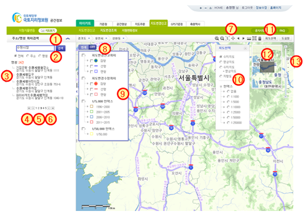

지형지물변동 > 지도화면설명
| ① |
|
||||
| ② |
|
||||
| ③ | 검색결과 목록에서 해당 항목을 클릭하면 해당위치로 이동하며, 지도위치 이동 시 축척은 1/10000으로 이동한다. (9페이지 참조) |
||||
| ＊ 최초 스케일(축척)은 1/10,000으로 설정되어 있으며, 확대, 축소, 이동이 가능하다. | |||||
| ④ |
|
||||
| ⑤ | 번호를 클릭하면 해당 번호의 페이지 목록으로 이동한다. | ||||
| ⑥ |
|
||||
| ⑦ |
|
||||
| ⑧ |
|
||||
| ⑨ | 범례종류로 체크버튼을 사용하여 해당 심볼내용을 지도화면에 보이기/감추기를 한다.(10페이지 참조) | ||||
| ⑩ | 지도선택 창 : 선택한 지도와 인덱스가 배경지도에 표현된다.(11페이지 참조) | ||||
| ⑪ | [지도선택] 버튼을 클릭하면, 지도선택 창 보이기/감추기를 한다. | ||||
| ⑫ | 색인 창 : 배경지도의 영역을 표현한다. | ||||
| ⑬ | 스케일(축척)바 : 배경지도를 미리 정해진 축척으로 확대/축소한다. | ||||
| ⑭ | 지도의 상태정보 표현 : 현재화면경계/현재위치/현재스케일(축척) |